Le projet QUIZZY 2024 (version 1.0)
Présentation
Le système QUIZZY permet de "jouer" et de s'évaluer en pleine immersion dans une salle.
- Une tablette est associée à l'évaluateur qui peut chosir le quiz à afficher
- Un écran principal permet de visualiser le quiz en cours avec la question posée et ses propositions de réponse
- Un ou plusieurs pupitres disposant chacun de 4 bumpers permettant de sélectionner la réponse d'un participant. Une rangée de LED affiche le temps restant pour répondre en mode compte à rebours.
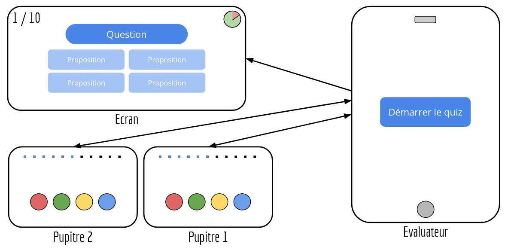
Recette
- Quizzy-mobile (Java/Android)
| Fonctionalités | A faire | En cours | Terminé |
| Sélectionner un quiz | | | X |
| Gérer le quiz | | | X |
| Connecter les pupitres des participants | | | X |
| Démarrer / Abandonner le quiz | | | X |
| Sauvegarder les résultats | | | X |
| Choisir le thème | | | X |
| Définir le temps par question | | | X |
| Fonctionalités | A faire | En cours | Terminé |
| Visualiser et gérer une session | | | X |
| Visualiser une question | | | X |
| Visualiser les propositions | | | X |
| Visualiser un compte à rebours | | | X |
| Visualiser les résultats | | | X |
| Dialoguer avec la tablette | | | X |
Screenshots
Interface Évaluateur (Tablette)
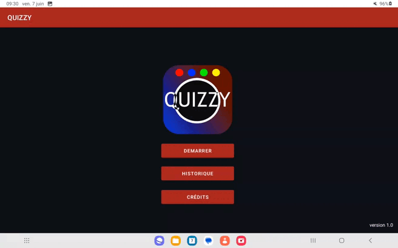
Les différentes vues :
- Accueil (Session, Historique, Crédits)
- Paramétrage d'une session (Thème, Temps, Nombre de question, Participants)
- Association des paticipants, connexions aux pupitres et écrans
- Visualisation et gestion d'une session
- Historique de partie sauvegardées
Les différentes popups :
Note : Les termes entre parenthèses indiquent les boutons permettant d'intéragir avec le popup
- Aucun participant connecté (Continuer, Configurer, Annuler)
- Participant non connecté (Connecté, Dissocier, Annuler)
- Périphérique non configuré (Déconnecter, Configurer, Annuler)
- Créer un participant (Créer, Annuler)
- Fin de session (Relancer, Sauvegarder, Quitter)
- Historique (Visualiser, Supprimer, Fermer)
- Crédits (Fermer)
Interface participant (Écran)
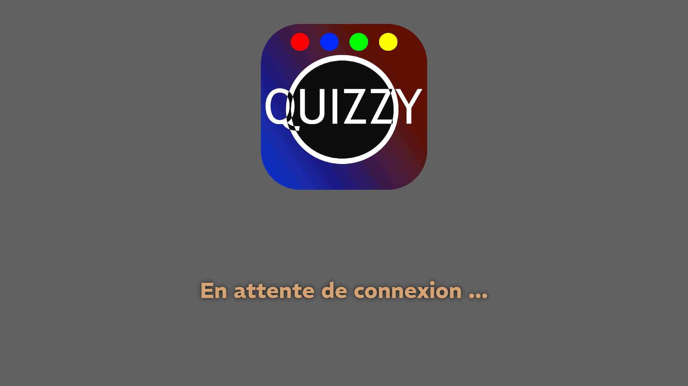
Les différentes vues :
- affichage de la liste des participants en attente du démarrage du quiz
- affichage du déroulement de la partie (Question, Propositions, Temps restant, Numéro de question)
- affichage des résultats des participants
Itérations
Itération 1
- Envoyer une question : L’application envoie une question à l’utilisateur.
- Récupérer les réponses : L’application récupère les réponses de l’utilisateur.
- Afficher les questions : Les questions sont affichées à l’utilisateur.
- Afficher les propositions de réponse :Afficher les 4 propositions de réponse.
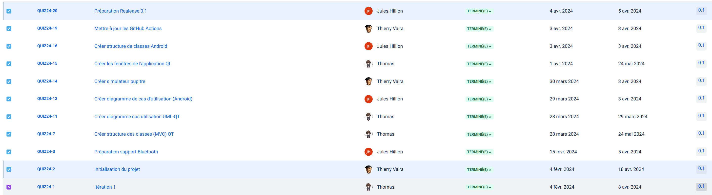
Itération 2
- Paramétrage partie : L’utilisateur peut paramétrer sa partie.
- Avoir des thèmes de questions : L’utilisateur peut choisir parmi différents thèmes de questions.
- Gestion de chronomètre : Un chronomètre est mis en place pour limiter le temps de réponse.
- Affichage chronomètre : Le chronomètre est affiché à l’utilisateur.
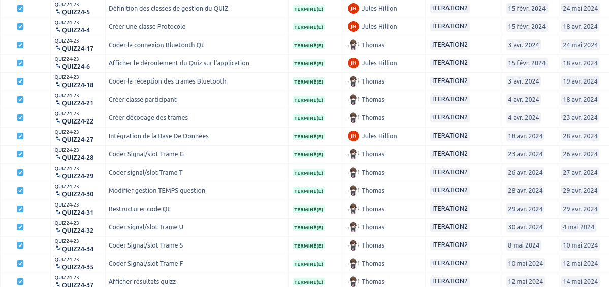
Itération 3
- Afficher les statistiques : Les statistiques de l’utilisateur sont affichées.
- Sauvegarder les statistiques : Les statistiques de l’utilisateur sont sauvegardées pour une utilisation future.
- Configurer le mode kiosk : La configuration de la Raspberry Pi en mode kiosk
- Effectuer plusieurs quiz : La possibilité d'enchaîner plusieurs quiz
- Mettre en forme l'affichage : La mise en forme pour un grand écran
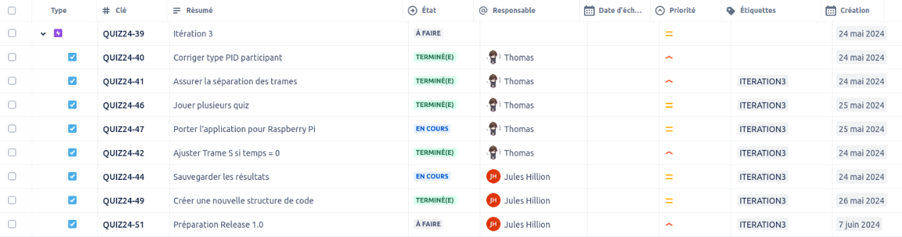
Diagramme de cas d'utilisation
Quizzy-mobile (Java/Android)
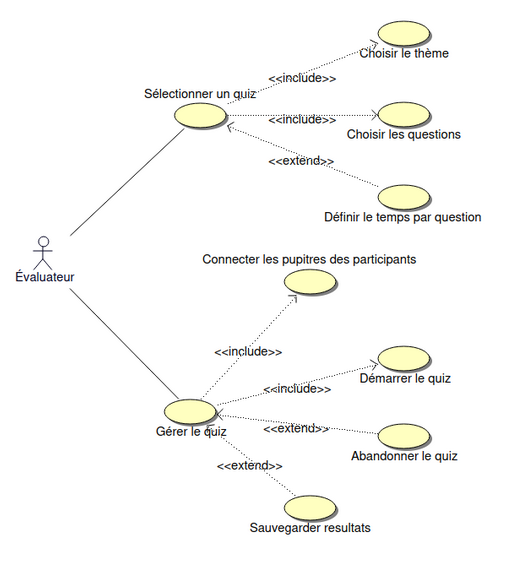
Quizzy-desktop (C++/Qt)
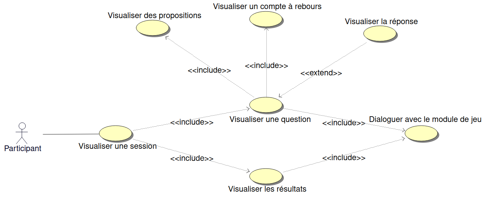
Diagramme de classes
Quizzy-mobile (Java/Android)

Quizzy-desktop (C++/Qt)
Diagramme des classes
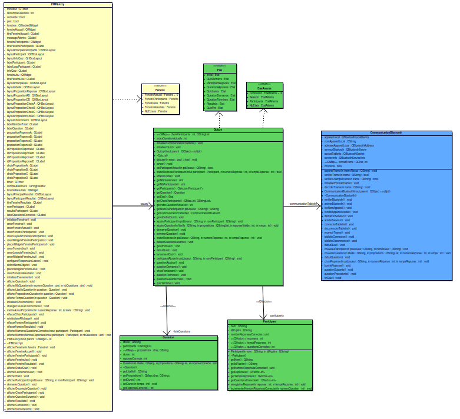
Diagramme des classes simplifié
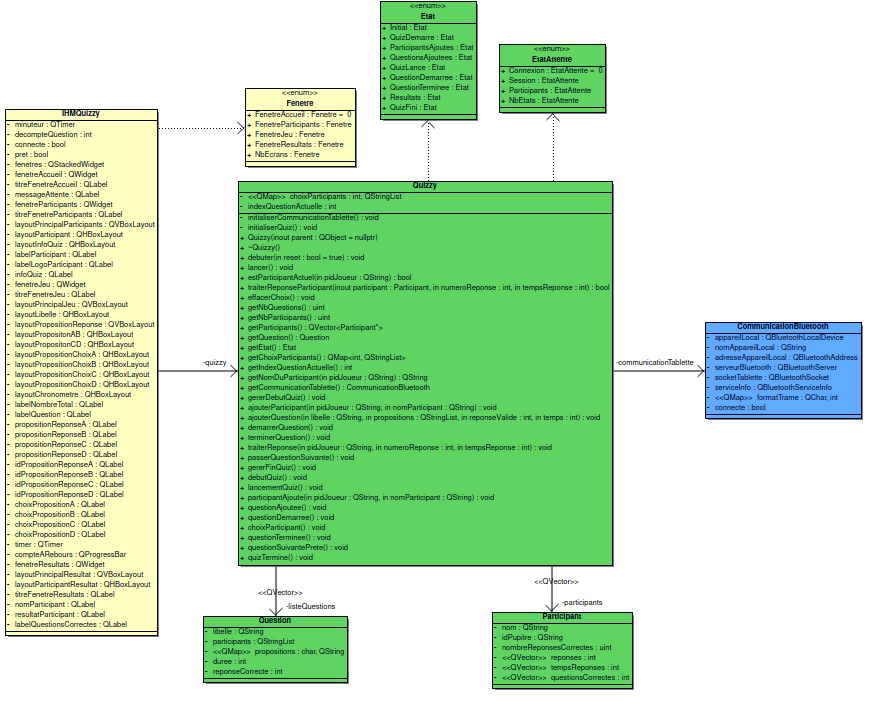
Base de données
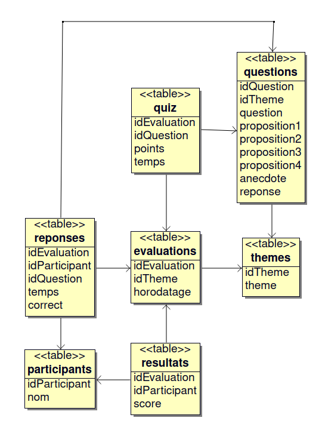
Détails de la structure :
quiz contient la liste des questions posées durant une sessionquestions contient la liste des toutes les questions avec ses propositions existantesreponses contient la liste des bonnes et mauvaises reponses des participants par rapport aux questions de chaque sessionsevaluations contient la liste de toutes les sessions sauvegardées avec leur horodatagethemes contient la liste des themes de questions existantesparticipants contient la liste des participantsresultats contient la liste des score de participants par session
Protocole
Nom des périphériques Bluetooth :
- "**quizzy-en**" où "**n**" est le numéro de l'écran.
- "**quizzy-pn**" où "**n**" est le numéro de pupitre.
Évaluateur -> Interface de jeu
| Type | Format | Description | Exemple |
| Lancer un quiz | $L\n | Signaler le début d’un quiz | $L\n |
| Indiquer un participant au quiz | $I;PID;NOM DU JOUEUR\n | PID: string (l’identifiant du pupitre)
NOM (ou pseudo) DU JOUEUR: string | $I;P1;Robert\n
Joueur ‘Robert’ avec UID ‘4615’ |
| Envoyer une question | $G;LIBELLE;R1;R2;R3;R4;NUMERO_REP_VALIDE;TEMPS\n | LIBELLE : string (une question)
R1, R2, R3 et R4 : string (propositions)
NUMERO_REP_VALIDE : int (1 à 4)
TEMPS : int (en secondes, si 0 alors la question n’a pas de temps limite) | $G;Quelle est le meilleur OS ?;Linux;Windows;Mac;Minitel;4;10\n
La réponse valide est la n°4, le Minitel |
| Signaler le démarrage (top) d’une question | $T\n | Afficher le démarrage du chronomètre | $T\n |
| Indiquer la réponse choisie par un joueur | $U;PID_JOUEUR;NUMÉRO_REPONSE;TEMPS_REPONSE\n | PID_JOUEUR: string
NUMÉRO_REPONSE : 1 à 4
TEMPS_RÉPONSE : en ms | $U;P1;1;3500\n
Choix réponse n°1 pour joueur du pupitre 1 en 3500 ms |
| Afficher la réponse | $H\n | Afficher la réponse à la question actuelle | $H\n |
| Passer à la question suivante | $S\n | Afficher question suivante | $S\n |
| Revenir à la question précédente | $P\n | Afficher question précédente | $P\n |
| Finir un quiz | $F\n | Signaler la fin d’un quiz | $F\n |
Évaluateur -> Pupitre
| Type | Format | Description | Exemple |
| Indiquer le numéro de question et le temps alloué pour répondre | $Q;NUMERO_QUESTION;TEMPS\n | NUMERO_QUESTION : de 1 à n
TEMPS QUESTION : en secondes si 0 alors la question n’a pas de temps limite | $Q;1;30\n
Question n°1
30 secondes pour cette question |
| Activer buzzers + lancer chronomètre | $E;NUMERO_QUESTION\n | Activer les buzzers pour ce numéro de question et lancer le chronomètre si besoin | $E;1\n |
| Désactiver buzzers + chronomètre | $D;NUMERO_QUESTION\n | Désactiver les buzzers et arrêter le chronomètre si besoin | $D;1\n |
| Indiquer résultat | $B;NUMERO_QUESTION;RESULTAT\n | NUMERO_QUESTION : de 1 à n
RESULTAT:
1 (vraie) ou 0 (faux) | $B;1;0\n |
Pupitre -> Évaluateur
| Type | Format | Description | Exemple |
| Envoyer une réponse | $R;NUMERO_QUESTION;NUMERO_REPONSE;TEMPS_REPONSE\n | NUMERO_QUESTION : de 1 à n
NUMERO_REPONSE : 1 à 4 (0 = non répondu)
TEMPS_REPONSE : en ms si 0 alors le temps n’a pas été mesuré | $R;1;2;17000\n
Acquitter toutes les trames de l’évaluateur |
| Acquitter | $A\n | Acquitter toutes les trames de l’évaluateur | $A\n |
Historique des versions
Version 1.0
Tablette
- Nouvelle IHM
- Se connecter à un périphérique Bluetooth
- Emettre une trame vers un périphérique Bluetooth
- Recevoir une trame
- Décoder une trame
- Afficher le déroulement de la session
- Associer les participants à un profil
- Vérifier en continue les connexions aux périphériques
- Paramétrer un quiz et une session
- Calculer automatiquement le temps alloué pour répondre
- Gérer une session
- Sauvegarder une session
- Afficher l'historique des sessions sauvegardées
- Visualiser une session sauvegardée
- Supprimer une session sauvegardée
- Créer un participant
Écran
- Afficher disposition des fenêtres
- Se connecter à un périphérique Bluetooth
- Recevoir une trame
- Décoder une trame
- Afficher la liste des participants
- Afficher les statistiques du quiz
- Afficher le déroulement du quiz
Version 0.2
Tablette
- Se connecter à un périphérique Bluetooth
- Emettre une requête vers un périphérique Bluetooth
- Recevoir une trame
- Décoder une trame
- Gérer les participants
- Choisir un thème de quiz et le nombre de questions
- Gérer un quiz
- Afficher le déroulement du quiz
- Calculer automatiquement le temps alloué pour répondre
Écran
- Afficher disposition des fenêtres
- Se connecter à un périphérique Bluetooth
- Recevoir une trame
- Décoder une trame
- Afficher la liste des participants
- Afficher les statistiques du quiz
- Afficher le déroulement du quiz
Version 0.1
Tablette
- Se connecter à un périphérique Bluetooth
- Emettre une requête vers un périphérique Bluetooth
- Recevoir une trame
Écran
- Afficher disposition des fenêtres
Documentation du code
https://btssn-lasalle-84.github.io/quizzy-2024/
Auteurs
©️ LaSalle Avignon 2024